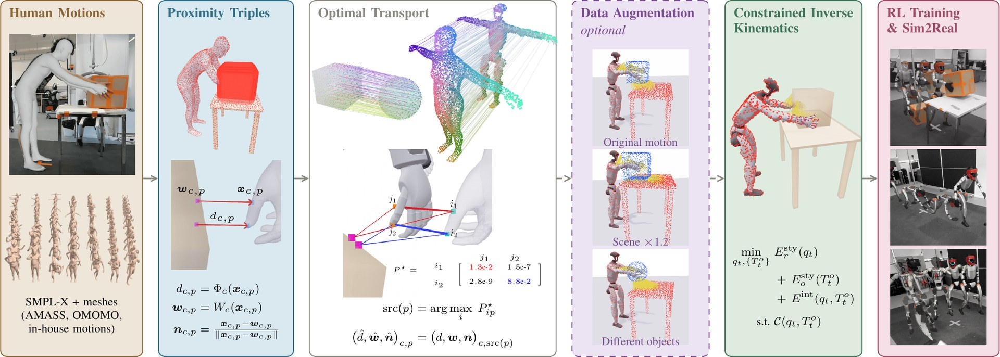

@misc{besset2026otretarget,
title = {{OTRetarget}: Joint Robot and Object Motion Retargeting via Optimal Transport},
author = {Besset, Guillaume and Carn, Erwann and Carecchio, Timoth\'ee and
Tordjman--Levavasseur, Valentin and Schramm, Fabian and
de Mont-Marin, Yann and Carpentier, Justin and Sathya, Ajay Suresha},
year = {2026},
eprint = {XXXX.XXXXX},
archivePrefix = {arXiv},
primaryClass = {cs.RO},
url = {https://arxiv.org/abs/XXXX.XXXXX}
}